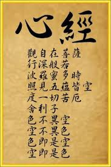

昆仑史曲 第二次天地大戰
六，观音调停，罢战修行
这一仗打的太狠又时间太长，双方阵亡英灵不计其数。大姐观音见此赶快出面调停。她命罗地解散大罗刹帝国，西洋也罢战撤兵。
由于双方能量损失过大，不仅原先下来的走不了，连后来下来渡人的也走不了啦。只好都在地球上避一避，积蓄能量，准备回归，但没有想到，这一避就是千百万年。 天外来客在地面上的暂时定居，给人类留下了史前文化、神话和神秘文化，以及她们用神力在地球上遗留的太古神迹。
圣母们时时挂心着自己沦落到地球上的子孙和战团将士们。所以世界各地也一代又一代传教着修行回归的方法。观音、西洋女王、三清等天尊纷纷设教，去教 化众生，才有了史前古教。而最原始、最古的古教，就是大日宫主创办的古婆罗门圣教，教学大日如来神光阵，天语又叫“玉女阵法”，地点大约在现在斯里兰卡一 带。
---地球上硝烟尽散，暂时出现了各自修行的和平时期。
久远的以后：
一代天尊九天玄女给了子孙们《薄伽梵歌》和《易》，她告诉了人类一条通天之路，人生的全部价值和意义就是回归，回归的第一要素就是相应，。而《易经》不仅指导人类如何适应地球环境以求得生存，同时也是回归的功法。并指出回归的终的是九天，以保持生灵独立的自我存在。
距今两千五百年前，釋佛又一次转世临凡，他投胎印度北部净饭国为王太子乔达摩.悉达多。婚后不久，深夜出宫，坚决地走上了修行之路。几年苦修，最终 成为“释迦牟尼”,创立了佛教。佛经的价值在于告诉人类，生灵有不生不灭性，永恒轮回性，并提出真正的人生价值在于八正道中道行，宇宙第一性的大法是客观 存在的，生灵回归的最高终的是宙心。《心经》及《楞严经》就是讲解具体回归的方法。它为世人更明确的指出了修行、出世、成佛之法。
玄龙与观音的儿子下界转世为耶稣，创立了天主教基督教。所以西方人知道：圣母在天上开辟了乐园，只要常念圣母名号就可以回归天国。但《圣经》主要是 一部应用法。它告诉人们在地界生存的法则。上帝说：我带来的不是和平，而是宝剑。若要和平和生存，必须手持刀剑！ 这个上帝是谁？罗地干布！
中东及地中海人坚决信奉妙善是宇宙中的“真主”？只要礼拜真主就可以回归。他们把以九天玄女代号命名的《古兰经》作为修行指导，创立了伊斯兰教。
伊斯兰和佛教、耶稣教是世界宗教“三大”。
道德天尊也转世到神州大地，给我们留下一卷《道德经》而去，中国修行者以此和《易》创立了中华国教---道教。
在同一时期，地球上各地的修行队伍大发展，出现了许多大大小小的宗教组织。
| 上 一 頁 | 下 一 頁 | 回 主 頁 |